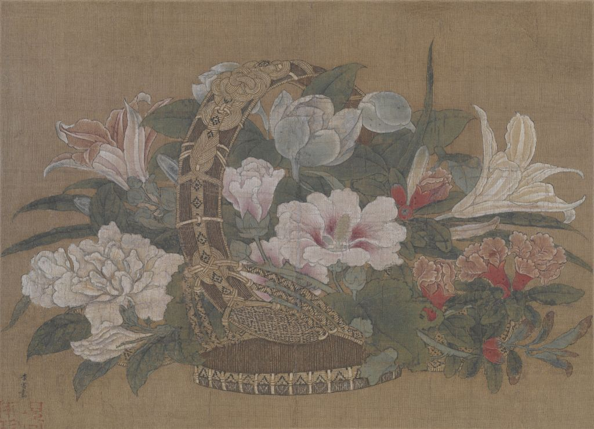
李嵩花篮图页
南宋
描绘细腻具体，线条富有表现力，敷色艳丽雅致，构图稳定饱满。
- 纵: 19.1cm
- 横: 26.5cm
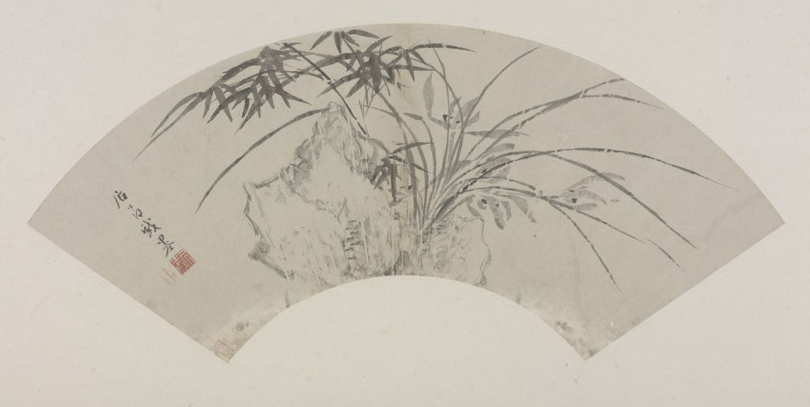
居节兰竹石图扇页
明朝
《兰竹石图》扇页，明，居节绘，纸本，墨笔，纵14.6厘米，横45厘米。
- 纵: 14.6cm
- 横: 45cm
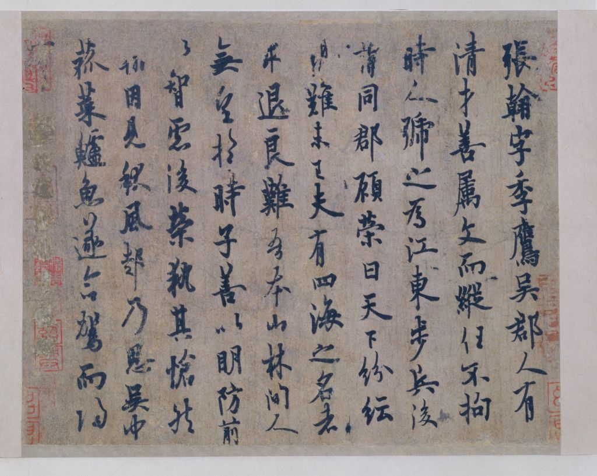
欧阳询行书张翰帖
唐朝
欧阳询书，纸本，此帖为唐人钩填本，笔墨厚重，锋棱稍差。
- 纵: 25.1cm
- 横: 31.7cm
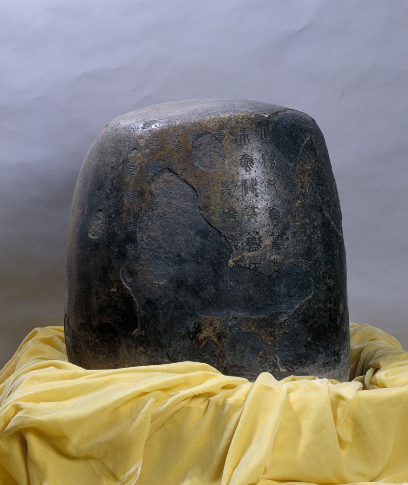
秦石鼓
秦国
石鼓共有十块，为花岗岩质，石鼓文，因文字篆刻在鼓形石上而得名。
- 高: 90cm
- 口径: 60cm
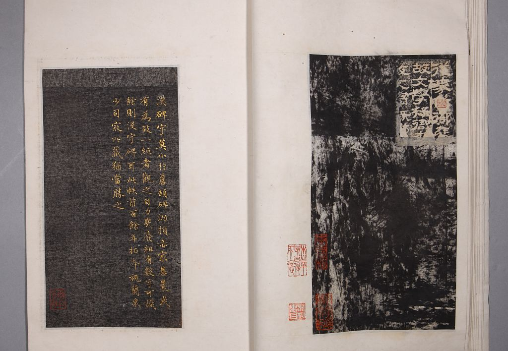
仓颉庙碑
明朝
碑立于汉延熹五年（162年），为纪念中华人文初祖仓颉所立。此为明早期拓本。
- 纵: 27.9cm
- 横: 15.6cm
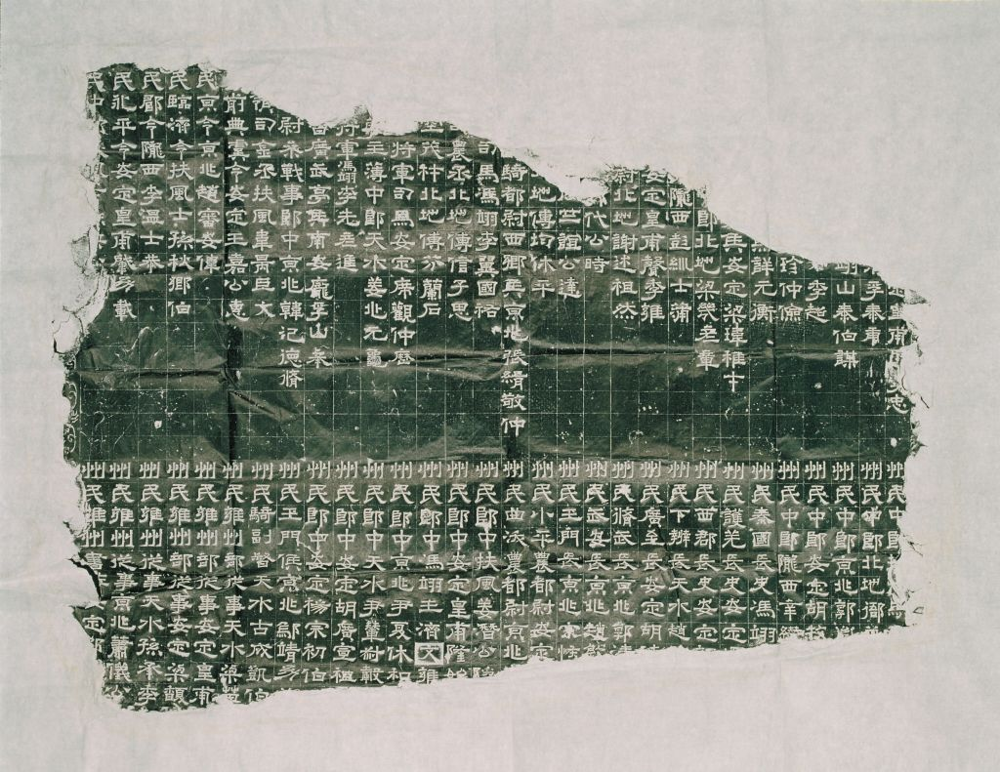
曹真碑
三国魏
三国时魏国碑刻。碑阳刻字存20行235字，碑阴存刻字30行485字，隶书体。
- 高: 82cm
- 宽: 122cm
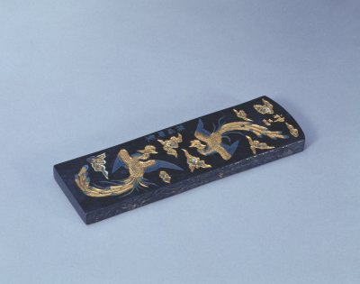
孙瑞卿神品墨
明朝
墨长方形，顶微圆，通体漆衣。墨面雕双凤于飞纹，上方阴识楷书“神品”二字。
- 厚: 1.4cm
- 长: 19.5cm
- 宽: 6cm
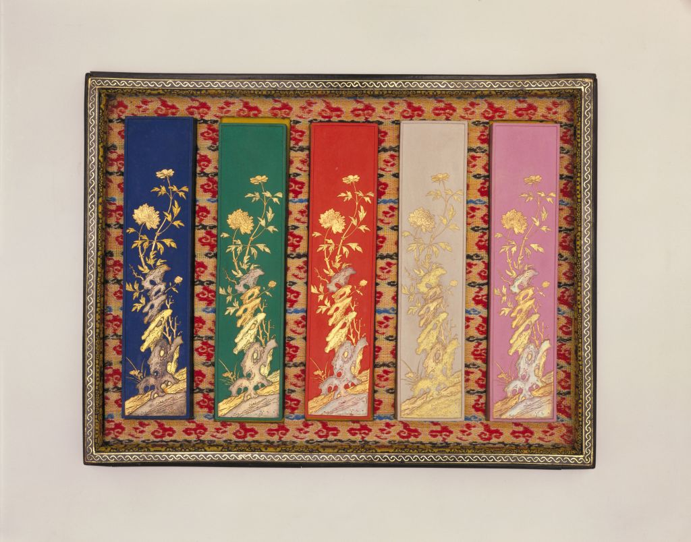
胡开文制大富贵亦寿考五色墨
清朝
５锭彩色墨，分红、青、绿、白、藕荷五色，其形状、规格、图案完全相同。
- 长: 16.3cm
- 宽: 3.6cm
- 厚: 1.2cm
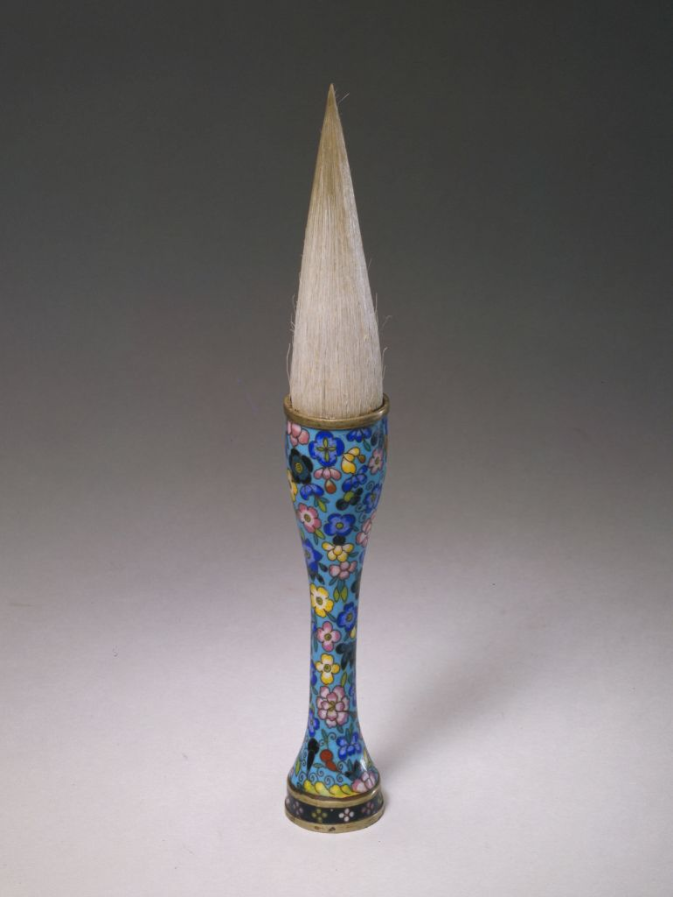
珐琅管羊毫提笔
清朝
笔斗体态狭长，与笔管相连的曲线舒缓，表现出清代晚期提笔共有的造型特点。
- 长: 20cm
- 斗径: 2.8cm
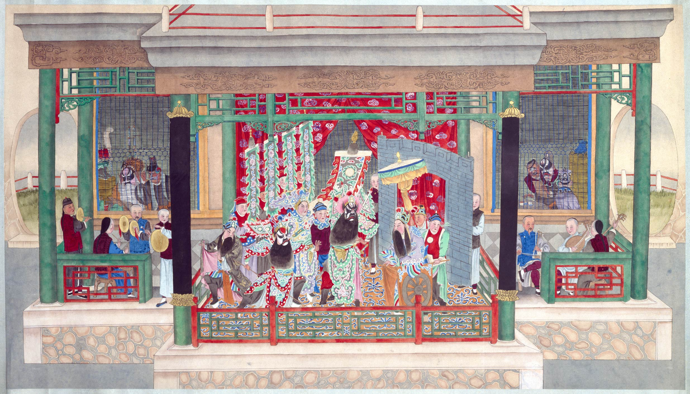
清人画戏剧图轴
清朝
描绘了皮黄戏《取荥阳》，演的是项羽大兵围困荥阳，刘邦、张良、陈平无计解围。
- 纵: 93.5cm
- 横: 165.3cm
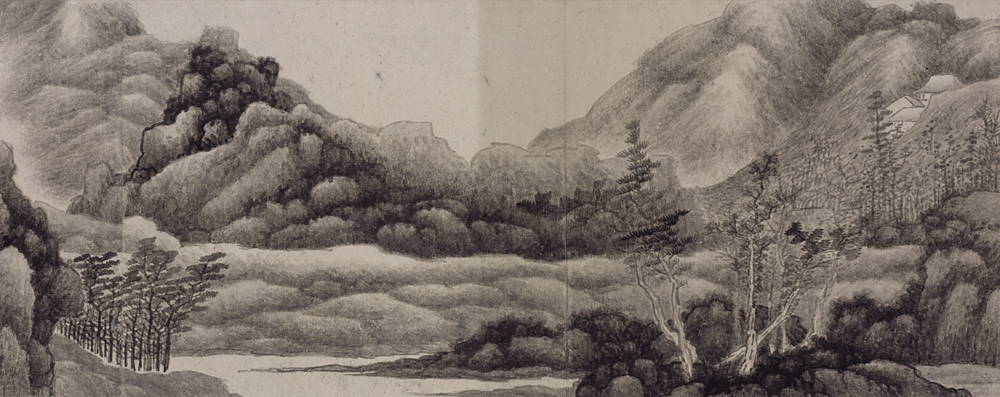
龚贤山水图卷
清朝
全图为长卷形式，重山复岫横向展开，用平远构图，整卷结构缜密，气韵苍莽。
- 纵: 28.8cm
- 横: 404.1cm
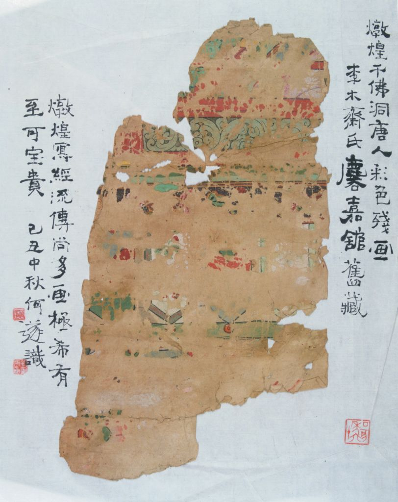
敦煌彩画图案残片
唐朝
图案为横向二方连续，以淡墨勾勒，填彩以红绿为主，间有白、绛、赭诸色。
- 纵: 28cm
- 横: 16.5cm